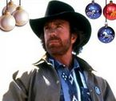
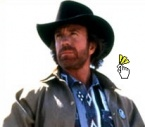
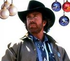
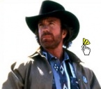

De: La Frikipedia, la enciclopedia extremadamente seria.
De: La Frikipedia, la enciclopedia extremadamente seria. De: La Frikipedia, la enciclopedia extremadamente seria.
| De la serie héroes del mundo: | ||
| Chuck Norris | ||
| ||
| Alias | El innombrable, el tío del sombrero, el que matará a IP anónima | |
| Superpoderes | Todos los enlistados aquí (y los que no estan ahí, también) | |
| Novia | Desconocida, no dejan rastro alguno después de estar con Chuck | |
| Enemigos | Dios, Mr. T, Santa Claus, tú | |
| Ciudad donde actúa | La que quede más cerca (lástima que, cuando pasa, la ciudad queda reducida a nada por su sola presencia). | |
| Carácter: | Cabreadísimo | |
| ¿Es malo o bueno? | Bueno, | |
| Vestimenta | Sombrero, pantalones vaqueros, botas, sombrero, camisa, ¿ya mencioné su sombrero? | |
| Grupo al que pertenece | Grandes | |
| Antecedentes | Antes de Chuck, sólo existía el badabín badabán | |
| ¿Natural o artificial?: | Artificial | |
| Secuelas | Actualmente está retirado, probablemente durmiendo. Cuando despierte se desatará el patada giratoria, propinada por él. | |
| Juegos que protagoniza | Tchaqui Nouris World | |
 Cagando en el techo Acomodándose el cuello Totalmente recargado En un cuarto oscuro Detrás de tí Viendo como mueres Partiéndose de risa Recitando un poema  Aún de Noche Vieja De vacaciones  El puntero de windows tras intentar tocar a Chuck
Cagando en el techo Acomodándose el cuello Totalmente recargado En un cuarto oscuro Detrás de tí Viendo como mueres Partiéndose de risa Recitando un poema  Aún de Noche Vieja De vacaciones  El puntero de windows tras intentar tocar a ChuckCriatura cibertrónica enemiga natural de Dios, hermano del Pato Donald y del calvo tetraplégico de los X-Men (¿Quien qué crees que lo dejo tetraplégico?). Se dedica a pegar patadas giratorias a tíos con sombreros y nachos. Aunque no lo reconozca, está claro que desciende del Fary, y es hermano mellizo del Teto Medina. Es bien conocida su manía de no pasar en la calle más de cinco minutos seguidos sin liarla. Fue presidente del Mundo (es un secreto no se lo digas a nadie) desde el 2005 hasta el 2008 (porque, según los españoles, "tiene un buen par de huevos").
Espera ansiadamente su venganza final hacia Carod Rovira, que acontecerá el día que éste lleve sombrero tejano.
Su mayor y único error en la vida, fue prestarle un espacio de radio a un alumno suyo llamado Pablo Motos (Es broma, Chuck NUNCA comete errores).
Es un ferviente defensor del pastafarismo, ya que en la guerra de Vietnam se volvió loco comiendo pasta, gambas fritas y cinco clases de arroz (salsas aparte), al recluirse como prisionero voluntario para derrotar al ejército enemigo (a base de miradas fijas, véase "Hechos sobre Chuck Norris"). Se ha dicho de él: "Chuck Norris tiene dos expresiones, y una de ellas es con barba". Uno de sus mayores aliados es el bueno de Bud Spencer.
Es muy importante para Chuk llevar pistolas, para así poder tirarlas al suelo antes de atacar.
Si respetas estas normas, serás discípulo de Chuck Norris:
Aunque hasta hace poco se creía que Chuck Norris nació en el siglo XII en el pueblo estadounidense de Villachota, en Texas, un estudio de ADN ha demostrado recientemente que en realidad es monegros, por lo que su entrada en mañolandia estaría prohibida y su merchandising retirado del mercado.
Tras encontrar a la vida y darle una paliza (al parecer estaba inmersa en un complot para el tráfico ilegal de gusanitos de colores) y de dar palizas a media docena más de entes abstractos "por si acaso" decidió que era el momento de buscar un trabajo, pero una vez más su herencia cibernética se reveló como un peso sobre sus aspiraciones y sueños. Acudió a las Naciones Unidas en busca de trabajo y fue rechazado al no poder pasar su pierna metálica por el detector de la puerta. Descontento, fundó la empresa McDonalds de distribución de residuos radioactivos y se dio a la bebida y al coleccionismo de fascículos de tanques en miniatura. A causa de la depresión, desarrolló una serie de desórdenes gástricos caracterizados por la bulimia y la antropofagia y devoró en una tarde la mitad de la población de Clearwater, Arizona. El eructo consecuente generó una onda de choque que depiló por completo al resto del estado y aún hoy puede oírse desde el otro lado del pacífico.
De esta época de su vida solo cabe destacar una cosa: despues de 5 años yendo a unas fiestas de la República Independiente de Pinhor, pues la borrachera y el ciego que cogió allí acabo por crearle gases supraintestinales y crear un pequeño agujero en la capa de ozono que hoy en día es mucho más grande, pues las borracheras que coge ahora son peores que Bush representando braveheart en el teatro principal de Bagdad. Muchas personas lo odian por esto sin embargo las pocas que quedan han decidido callarselo antes de que regrese y se los coma.

Con la llegada de la pubertad Chuck Norris desarrolló toda una serie de órganos sexuales de características biomecánicas, que debido al descontrol hormonal cobraron vida propia y se convirtieron con el tiempo en lo que más tarde se llamaría el Equipo A. Chuck consiguió trabajo en una pizzería como repartidor pero repartía las pizzas tan rápido que la entrega llegaba antes que el pedido fuera siquiera hecho, lo que causa una paradoja temporal y la gran explosión de Boston en el año 1994 de nuestra era.
Desesperado por su mala suerte, intentó cortarse las venas y descubrió desalentado que es completamente invulnerable a cualquier tipo de daño físico y/o mental (después lo intentó viendo un programa entero de Operación Triunfo).
Viajó a Redmond, Texas a visitar a Bill Gates, el cual decidió acabar con su sufrimiento formateando su cerebro a bajo nivel e instalando Windows 45. Liberado ya de sus penas, Chuck Norris comenzó su carrera en el cine haciendo de coliflor mutante en la película de serie B llamada "La coliflor mutante infernal radioactiva espacial". El éxito fue tal que a Chuck le llovían los contratos y se convirtió de la noche a la mañana en supermillonario, sex-symbol y coliflorista. Más tarde inventa el Chuck_OS, con funciones complejas como respirar mientras mata, llegando a procesar 1000 muertes por microsegundo.
Sin embargo nada de esto habría sido posible si Chuck no hubiera viajado a los valles de changrila en busca de su fe, donde descubrió que su éxito se debía a El Mono, quien lo escogió como profeta y lo entrenó.
Finalmente daría muerte a la Juventud, con 1/4 de mirada.
Fue sin duda su época de mayor perfección y dominiación del mundo, durante esta era fue ofendido por los Beatles por que ellos había dicho que eran más conocidos que Jesús, ya que Jesús es su amigo más cercano y discípulo.
El plan de venganza consistió primeramente en tirarse un pedo para crear a Cine fantástico. Por dicha razón el primero en morir fue 1980; el reporte oficial de la muerte de Lennon nos dice que iba saliendo de su depa en fan enmascarado y le cortó la mano con un tubo de luz fluorescente, después de esto apareció un gran agujero en el suelo al que John Lennon ya sin mano se arrojó, cayendo en china donde moriría de manera instantánea por el impacto. Más tarde en 2001 el siguiente en morir fue George Harrison debido a que ese día Chuck vio en un sueño el trailer de El señor de los anillos, le gusto tanto que se tomó la molestia de parpadear para que apareciera el boleto debajo de su sombrero, dicha emoción causó en Harrison un cáncer de pulmón bastante particular: según testigos Harrison escupía barcos de humo por la boca minutos antes de morir, por lo que los médicos lo denominaron como cáncer de pulmón tolkiano. El año pasado Ringo Star estuvo muy grave, curiosamente en el verano del 2005, fecha en la que Chuck vio el Episodio 3, se dice que se le veía toser y caminar por su estudio tapado solo con una escobilla del váter, pero son sólo especulaciones, por ahora esperemos una gran Pelicula de ciencia fantástica para ver morir a los otros 2 (se dice que legiones de antifans de los Beatles y superfans de Star Wars están negociando con George Lucas la creación de una nueva trilogía, a lo que George Lucas respondió: "Yo uso barba por tributo a Chuck, no pienso decir más.".
En cuanto a estos últimos años, Chuck Norris murió en 2003, pero aún la Muerte no se ha atrevido a llevárselo. Chuck Norris "vive" feliz con su familia compuesta de cyberalcachofas, pepinillos de última generación capaces de transmitir datos a gran velocidad gracias a la tecnología i-mode y agrocomputadoras en su rancho de Texas. Ha escrito la Chuckbiblia, que ha sido traduciada a todos los idiomas conocidos y por conocer y 4 mas por si las moscas y que se venden en todas las eras desde la creación del mundo, 235 enciclopedias de Karate, una obra de teatro para niños bobos y 38877764 cartas al director para quejarse de cosas.

En la actualidad Chuck Norris solo tiene un enemigo mortal. Este es conocido bajo el nombre de El Fary. Todo comenzó en las guerras púnicas, cuando Chuck Norris luchó mano a mano con El Fary para combatir al señor del mal, conocido como Leticia Sabater.
En aquella época, cuentan los ancianos que la lluvia ya se impregnaba de Chuck; por ello El Fary le tenía gran envidia, así que el día que Chuck venció a Leticia Sabater, le entregó a El Fary el consolador que había sido forjado en el coño del destino. En él se podía leer "Un consolador para follarlos a todos, un programa de televisión para atarlos a las tinieblas".
El Fary a modo de venganza decidió meterse el consolador por el culo en vez de destruirlo en el coño del destino. Gracias a esto, en el año 33 d.C. (d.C.: después de Chuck) El Fary sacó su single "Torito Bravo"; dado que Chuck no pudo sacar ese disco ese mismo año (pues no tenía el consolador de Leticia Sabater) juró por sus lágrimas-cura-cáncer que mataría a "El Fary".
Otro de sus enemigos es Hugo Chávez, quien le ha desafiado con lo del socialismo del siglo XXI, y a su patada giratoria diciendo: no le tenemos miedo a sus patadas giratorias, socialismo o muerte, y el junto a Fidel Castro, quieren destruir a Chuck porque dicen que es capitalista y agente de la CIA, pero no lo lograran, Chuck es invencible, por eso Hugo Chávez huye de el y su gran poder, ya las cosas no son como antes desde que Hugo Chávez insultó a Chuck. Chuck está lleno de ira lo hallará y le destruirá su verruga para así terminar con el y el socialismo del Siglo XXI…..
El reggeaton, Chuck Norris no lo sabe pero este cancer social subnormalizante será un mal que tendrá que combatir pronto. Una horda de adolescentes de origen multicultural pero con un CI todos inferior a 30 se está preparando para enfrentarse al amo y señor del Universo en desigual batalla. Lo que no saben es que el resulta de dicha contienda ya está decidido,a un taxista ciego de Nueva York le fue revelada mientras su perro lazarillo meaba. Dejemoslo en que el indice de vejez del mundo subirá de manera brutal y sangrienta.
Chuck Norris no tiene frases celebres, todo lo que dice es importante, porque Chuck Norris es Chuck Norris.
Pero sí cabe destacar una que sólo ha pronunciado una vez: "Hola soy Chuck y vengo de Puga, ¿tienes un cigarro? A mí, si me veis por la calle pedidme lo que querais, ya me veis, soy el de la corbata recortada, pero si me conocierais no estaríais hablando conmigo muahahahah."
Chuck no ha creado una religión pero todos fuimos bautizados en su credo en el momento de nacer. Esta religión tiene, oraciones, preceptos y pecados, como todas las demás... pero las demás no tienen a Chuck como Dios.

|
Chuck Norris nuestro que estás en los cielos, |

|
| Chucknuestro |
En la época de madurez de Chuck Norris, Chuck Norris entró en contacto con el Mono, quien le tatuaría una serie de mandamientos universales en la espalda, normas que, si quieres continuar con vida, debes de cumplir a rajatabla.
Se comenta en el templo Shao-Lin sito en Tarancón que si miras directamente a estos tatuajes puedes alcanzar el Nirvana con sus trágicas consecuencias, el último que lo hizo fue Kurt Cobain y acabó con Courtney Love, después una fuerza lo llevo a suicidarse.

Avaricia
Envidia y en DVD
Artículo principal: Hechos sobre Chuck Norris
Cuando chuck norris hizo la mili no llevaba fusil llevaba 1 leopard 2 en cada brazo
Los artículos de Chuck Norris son utilizados en la actualidad y por personas famosas como la madre de Tamarambar que utiliza el bolso diseñado por Chuck Norris lleno de infinidad de piedras y ladrillos para poder hacer daño a la quente que le persigue o la acosa.
Otros artículos nos los puede regalar nuestro propio enemigo o incluso nuestro jefe. Como podría ser este artículo para que no volvamos a ir al trabajo dormido. Al levantarte por la mañana temprano, la taza de Chuck Norris te pega tal paliza que ya no vas dormido a la oficina ni un sólo día más. Chuck Norris la diseñó y la regalo a sus trabajadores para que tener que salir a pegarles en las mañanas.
O por ejemplo las intocables, indestructibles e irremplazables botas de goma que Chuck utilizaba cuando iva a ayudar a Petete® en la época de la vendimia.
Son conocidos como mitos, leyendas. Son historias de tipo anonimo debido a que los autores han aparecido totalmente desfigurados por Chuck Norris y su patada giratoria.
Cierta vez, un paparazzi disfrazado, entro a la casa de Chuck Norris y tomó fotos intimas que vendió a una revista porno. Estaba disfrazado de R2D2.
Una vez fué pillado sin camiseta sin que se diera cuenta, o eso aparentó... No se volvió a saber nada del heróico fotógrafo¿Cómo se llama la gata del celador de Hogwarts? Señora Norris. ¿Coincidencia? No. Chuck estaba en una época dura. Cansado de sus poderes ilimitados, trato de refugiarse en sus creaciones para llenar un vació que tenia muy dentro suyo. Creó de todo. Pero nada podía llenarle ese hueco que seguía sintiendo. Un día, estaba conversando con Harry Potter cuando se le cruzo una gata muy particular. Y dijo,"¿Quien es esa belleza?" y Harry le contesto que era la gata del celador. Chuck desesperado busco hacer lo posible por acercarse, le daba de comer, la acariciaba y muchas cosas mas. Hasta que la gata se enamoró de Chuck. Unos meses después se casaron. Paso mucho tiempo y Chuck se aburrió de la Señora Norris, ya era noticia vieja. Sra Norris entro en depresion y se torció hacia el camino de las drogas. Ya nada podía contenerla. Así que en uno de esos paseos por los pasillos de Hogwarts, la señora Norris vió a Harry y se le acercó, así empezó esta relación "secreta". Era costumbre ver a Harry con la señora Norris todos los días después de clase. Y Chuck lo sospechaba. Una noche, Chuck llegaba tarde a casa, luego de haber matado a Superman 3 veces, y sintió algo raro. Se acercó y escuchó los gritos de excitación de su mujer "MIAUUUUUU MIAUUUU". Chuck no pudo contenerse asi que salto con una patada voladora en el aire a distancia el impacto que sufrió Harry casi lo mata, logro sobrevivir gracias a las clases de contorcionismo que dumbledor le daba todas las noches. En cambio de su muerte, Chuck le hizo una cicatriz en forma de rayito para que le combine con los anteojos. Harry le mostró a Chuck la verdad detrás de la señora Norris. así que Chuck le borró la memoria a todos y se fue para siempre a hacer películas en Holywood.
Esto es algo que muy pocos saben y nadie se anima a contar.

| Héroes |
|---|
| Action Man • Afilador • Angus Young • Arnold Schwarzenegger • Astérix el Galo • Austin Powers • Black Rock Shooter • Bruce Lee • Che Copete • Chino Cudeiro • Chuck Norris • Dimitri • Don Ramón • El Héroe Mediatis • El Quijote • Escrotoncio • Goku • Gregory House • Indiana Jones • Jack Bauer • Jackie Chan • James Bond • Jesús de Nazaret • Jimi Hendrix • Luigi • MacGyver • Michael Moore • Mortadelo y Filemón • Mr. Proper • Rambo • Rémi Gaillard • Rocky • El Cid • San Ganchao • Takuma Sato • The Boogeyman • Tony Melendez • Txumari Alfaro • Vin Diesel |
Autor(es):